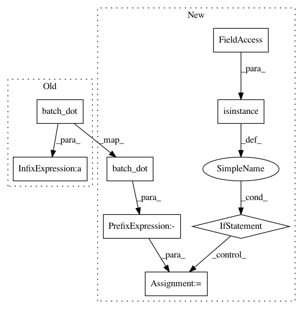

b5eb014dd7b745b38aadc778a8ef15dbfc8c6a5e,paysage/models/hidden.py,HopfieldModel,marginal_free_energy,#HopfieldModel#Any#Any#,289
Before Change
def marginal_free_energy(self, visible, beta=None):
J = B.dot(self.params["weights"], self.params["weights"].T)
return -B.dot(visible, self.params["visible_bias"]) - beta * B.batch_dot(visible, J, visible)
class GaussianRestrictedBoltzmannMachine(LatentModel):
After Change
def marginal_free_energy(self, visible, beta=None):
J = B.dot(self.params["weights"], self.params["weights"].T)
energy = -B.batch_dot(visible, J, visible)
if isinstance(beta, numpy.ndarray):
energy *= numpy.ravel(beta)**2
energy -= B.dot(visible, self.params["visible_bias"])
return energy
In pattern: SUPERPATTERN
Frequency: 3
Non-data size: 8
Instances
Project Name: drckf/paysage
Commit Name: b5eb014dd7b745b38aadc778a8ef15dbfc8c6a5e
Time: 2017-01-13
Author: charlesfisher@Charless-MacBook-Pro.local
File Name: paysage/models/hidden.py
Class Name: HopfieldModel
Method Name: marginal_free_energy
Project Name: drckf/paysage
Commit Name: 6c045f28b527f92c7dac1ef729071604f4e038ac
Time: 2017-01-05
Author: charlesfisher@Charless-MacBook-Pro.local
File Name: paysage/models/hidden.py
Class Name: RestrictedBoltzmannMachine
Method Name: joint_energy
Project Name: drckf/paysage
Commit Name: 6c045f28b527f92c7dac1ef729071604f4e038ac
Time: 2017-01-05
Author: charlesfisher@Charless-MacBook-Pro.local
File Name: paysage/models/hidden.py
Class Name: HopfieldModel
Method Name: joint_energy